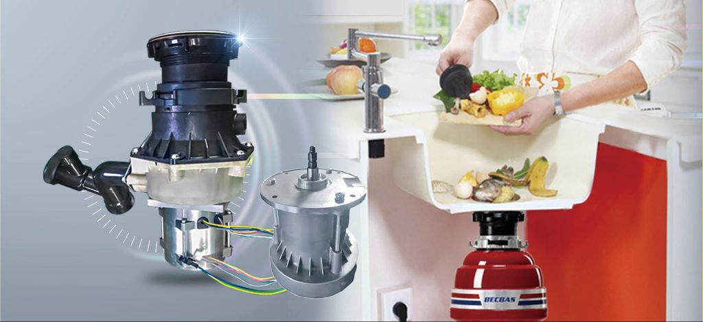

No one understands your kitchen’s hygiene needs like Hindware Appliances does. With our exceptionally tough food waste disposer, you will wake up to a fresh and clean kitchen every day.
A food waste disposer will help you with the problems At the same time as the food waste arises, the kitchen staff can get rid of this by grinding it down in the grinder and rinsing or pumping it away in the kitchen's drain pipe to a local tank or municipal treatment plant Waste disposal units can help reduce the amount of food waste that ends up in landfills, which can benefit the environment. Convenient: Waste disposal units are convenient, allowing you to easily dispose of food waste while cooking or cleaning up.
1. TMK-1 food waste disposer machine is the perfect solution to turn your food waste into nutrient-rich compost from the comfort of your home.
2. With this innovative device, you can now effortlessly contribute to waste utilization and reduce your carbon footprint.
3. Our smart household food waste composter is fully automatic and makes composting a hassle-free experience. Put the food waste in the compost bin and let the machine do the rest.
4. It is equipped with a powerful grinding system that efficiently breaks down waste into smaller particles, ensuring rapid decomposition.
Sharp food waste disposer is a premium manufacturer providing all kinds of organic Waste management solutions from the house of Sharp. We curate products that are good for you, your kitchen, and the planet!